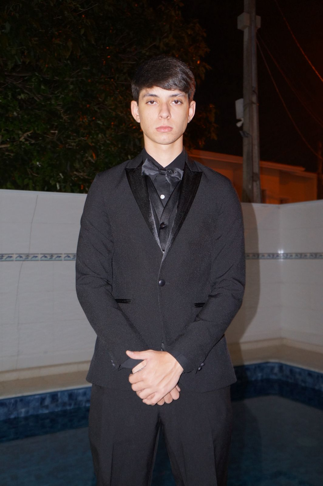

E-mail: lucas.fm8@puccampinas.edu.br
Telefone: (15) 99137-7861
Sexo: Masculino
Estado Civil: Solteiro
Atuar como Principal Software Engineer, Staff Engineer, Software Architect ou Engineering Manager, contribuindo para o desenvolvimento de sistemas distribuídos de alta escala, plataformas de software, inteligência artificial e soluções críticas. Busco aplicar mais de 18 anos de experiência em engenharia de software, combinando conhecimento técnico avançado, arquitetura de sistemas, liderança de equipes e desenvolvimento de produtos tecnológicos de grande impacto. Meu principal objetivo é participar de projetos que envolvam alta complexidade técnica, inovação, escalabilidade, inteligência artificial, computação em nuvem e sistemas de missão crítica, além de contribuir para a formação e evolução de equipes de engenharia.
Senior Software Engineer / Staff Software Engineer
2024 – Atual | 2 anos
Atuação no desenvolvimento e evolução de sistemas distribuídos de alta escala, com foco em confiabilidade, desempenho, escalabilidade e inovação tecnológica.
Senior Software Engineer
2021 – 2024 | 3 anos
Atuação no desenvolvimento de produtos e plataformas de software de grande escala, trabalhando principalmente com serviços distribuídos, cloud computing e engenharia de sistemas.
Engenheiro de Software Sênior / Tech Lead
2016 – 2021 | 5 anos
Atuação no desenvolvimento de sistemas financeiros críticos, com foco em segurança, alta disponibilidade, processamento de grandes volumes de transações e integração entre sistemas.
Software Engineer / Senior Software Engineer
2008 – 2016 | 8 anos
Atuação no desenvolvimento de software para sistemas de alta criticidade e projetos relacionados à engenharia aeroespacial, automação, processamento de dados e sistemas distribuídos.
2004 - 2008 | 4 Anos